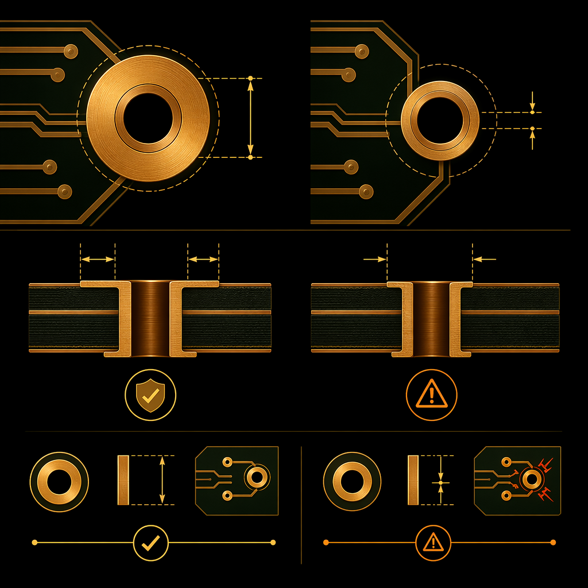
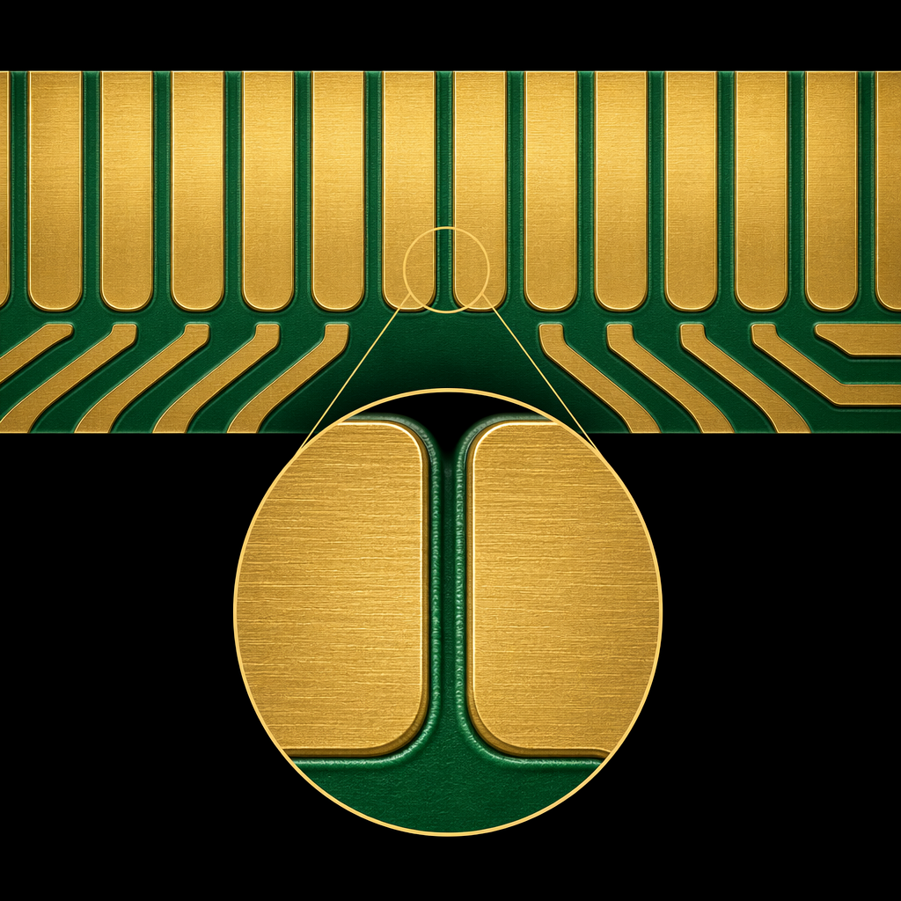
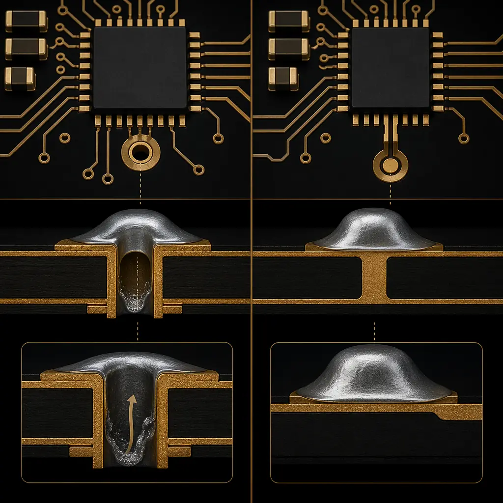
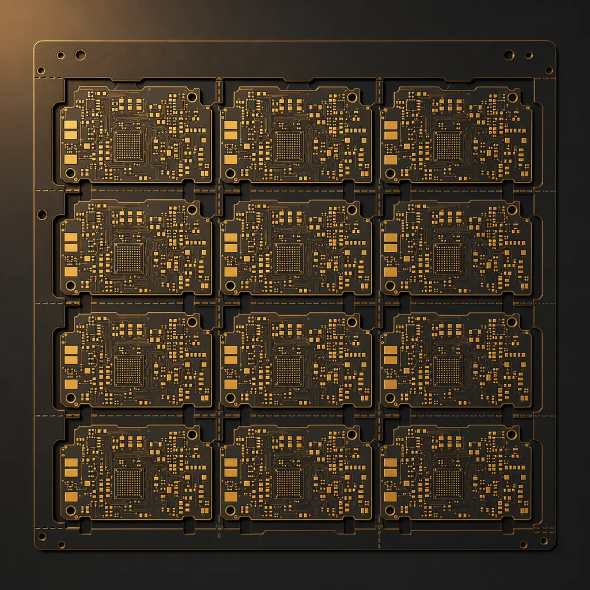

42|
42| Every PCB designer has received that dreaded email: "We found DFM issues with your design. Please revise and resubmit." It delays prototypes by days, adds engineering fees, and in the worst case forces a costly redesign. Yet most DFM problems are preventable with eight rules that take minutes to verify but save thousands in manufacturing costs.
57| 58|At Huaxing PCBA, our engineering team reviews over 200 new PCB designs every month. We see the same issues repeated across industries — from startup prototypes to Fortune 500 production boards. Here are the eight DFM rules that actually move the needle on cost and yield, backed by real factory data.
59| 60|Our data: Designs that pass DFM on first submission have a 98.7% first-pass yield. Designs requiring DFM revisions average 2.3 extra days and 12% higher unit cost. The difference comes down to these eight rules.
62|1. Annular Ring: The Most Expensive 0.05mm You'll Ever Ignore
65| 66|The annular ring — the copper pad surrounding a drilled hole — is the single most common DFM failure we see. IPC-A-600 Class 2 requires a minimum 0.05mm annular ring after drilling. Class 3 requires 0.1mm. Yet we routinely receive designs with 0.02mm rings that pass DRC in the CAD tool but cannot be manufactured reliably.
67| 68|
69| 70|Why CAD tools lie to you: Most PCB design software calculates annular ring from the finished hole size, not the drilled hole size. The drill is typically 0.1–0.15mm larger than the finished hole to account for plating. On a 0.3mm via with a 0.55mm pad, your CAD shows a 0.125mm ring — but the actual drilled hole is 0.4mm, leaving only 0.075mm. That's marginal for Class 2 and failing for Class 3.
71| 72|2×
73|Rule of thumb: Design pad diameter at least 2× the finished hole diameter. For a 0.3mm via, use a 0.6mm pad minimum. This absorbs drill wander (±0.075mm on standard equipment) and leaves a manufacturable annular ring. The board area cost is negligible; the re-spin cost is not.
74| 75|2. Trace-to-Copper Clearance: The Hidden Yield Killer
76| 77|At Huaxing, we manufacture down to 3/3mil (0.075/0.075mm) trace and space on our advanced line. But running at the process limit reduces yield. For a 3/3mil design on a 16-layer board, we expect 85–90% first-pass yield. Relax that to 5/5mil and yield jumps to 97%+. The cost difference between those yield rates on a 10,000-piece order is measured in thousands of dollars — far more than the marginal PCB area savings of tighter traces.
78| 79|When to push limits: Tight traces are justified when board real estate is truly constrained (wearables, implantables, aerospace modules). For everything else, the economics favor conservative design rules. A 5/5mil design on a slightly larger board almost always costs less than a 3/3mil design on a compact board, once yield is factored in.
80| 81|3. Copper Balance: The Warpage Problem Nobody Talks About
82| 83|Uneven copper distribution across layers causes PCB warpage during lamination and reflow. We measure this: boards with a copper density difference >15% between opposing halves of the stackup show measurable bow and twist beyond IPC-6012 limits. The fix is straightforward — add copper thieving (dummy copper fills) to sparse areas — yet it's one of the most overlooked DFM steps.
84| 85|Factory data point: Boards with balanced copper (<10% density difference per layer pair) have a 0.3% warpage rejection rate. Unbalanced boards (>20% difference): 4.7% rejection rate. On a 5,000-piece order, that's 235 scrapped boards that could have been prevented at the design stage.
87|4. Thermal Relief: Stop Cooking Your Pads
90| 91|Connecting a surface-mount pad directly to a large copper plane creates a heat sink that prevents proper solder joint formation. The pad never reaches reflow temperature before the oven zone passes, resulting in cold joints that pass visual inspection but fail in the field. This is especially critical on boards with 2oz+ copper, where the thermal mass difference is extreme.
92| 93| 94| 95|A proper thermal relief — 4 spokes, each 0.25–0.3mm wide, connecting the pad to the plane — provides enough thermal isolation for reliable soldering while maintaining adequate current capacity. For high-current paths (>3A per spoke), widen the spokes rather than eliminating them.
96| 97|5. Solder Mask Sliver: The 0.1mm Gap That Destroys Solder Bridges
98| 99|The minimum solder mask sliver — the green (or blue, or black) dam between two adjacent pads — must be at least 0.1mm after accounting for mask registration tolerance. On fine-pitch components (0.5mm pitch QFP, 0.4mm pitch BGA), this is often the limiting factor. If the sliver is too thin, the mask lifts during development, creating a solder bridge risk between adjacent pads.
100| 101|
102| 103|6. Via-in-Pad: Convenient for Layout, Expensive for Manufacturing
104| 105|Placing vias directly in SMD pads is electrically elegant — shortest possible connection, minimal inductance. But it creates three manufacturing problems: solder wicking into the via during reflow (starving the joint), trapped air causing voids, and inability to inspect the joint. The fix — via filling and plating over — adds approximately $2–4 per board in processing cost.
106| 107|Decision rule: Via-in-pad is viable when: (a) you're doing it on <5% of pads on the board, (b) the component pitch genuinely requires it (0.4mm BGA), and (c) you've budgeted for the additional processing. For everything else, dog-bone routing (via adjacent to pad with a short trace) achieves similar electrical performance at zero added cost.
108| 109|
110| 111|7. Silkscreen Readability: Someone Has to Debug This Board
112| 113|We see designs where silkscreen text overlaps pads, component outlines obscure reference designators, and polarity marks are ambiguous. On a board with 500+ components, the technician debugging a prototype cannot spend 30 seconds per component cross-referencing the assembly drawing. Place reference designators adjacent to (not on) components, orient them consistently, and ensure polarity marks (pin 1 dot, cathode bar) are visible after assembly — not hidden under the component body.
114| 115|8. Panelization: Design for Depaneling from Day One
116| 117|Your PCB doesn't leave the factory as an individual board — it leaves as part of a panel. Panel utilization (the percentage of the panel area that becomes sellable boards) directly impacts unit cost. We target 85%+ utilization. Designs with irregular board outlines, excessive spacing between boards, or non-standard panel sizes reduce utilization and increase cost per board.
118| 119|For boards that will be machine-depaneled (router or V-score), include 2–3mm routing clearance between boards. For V-score separation, maintain a minimum 5mm keep-out zone from the score line for tall components (>4mm height) to prevent damage during depaneling. These rules cost nothing to implement but prevent edge damage, cracked MLCCs, and broken traces at the panel boundary.
120| 121|
122| 123|The Bottom Line
124| 125|DFM is not about dumbing down your design to the lowest common denominator. It's about understanding which design decisions affect manufacturing yield and cost — and which don't. A design that follows these eight rules will typically cost 20–30% less to manufacture than an electrically identical design that ignores them, purely through higher yield and fewer process steps.
126| 127|At Huaxing PCBA, we provide free DFM review on every order. Our engineers check all eight of these rules (and more) and return a marked-up report within 24 hours. The goal is not to criticize your design — it's to make sure the boards you receive work exactly as intended, on time, at the lowest possible cost.
128| 129| 157|
158|
157|
158|